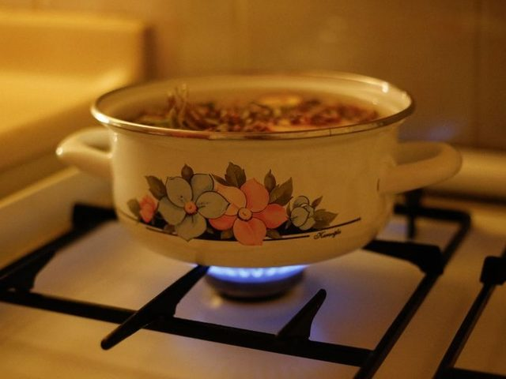
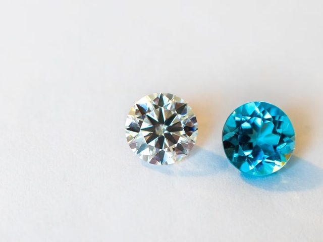
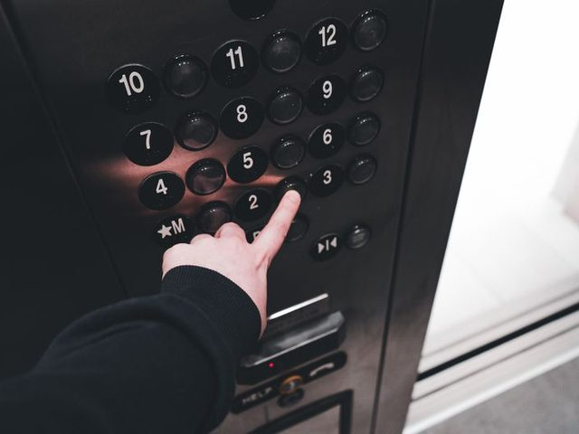

VOCABULARY · WORD UP 單字複習 UNIT 36
P-III．P 開頭（三）
WORD UP「P-III」的 42 個字（pleasure 到 priest）。紅色＝要複習，藍色標籤＝WORD UP 標熟記、還要在這裡考對。
共 42 個單字．點 🔊 聽發音
1pleasuren.
樂趣；榮幸
It's my pleasure. 不客氣
Thank you! — It's my pleasure.謝謝你！——不客氣。
2plusprep.
加
minus 減
Two plus three is five.二加三等於五。
3pocketn.
口袋
He put his hands in his pockets.他把手插在口袋裡。

4poemn.
詩
poet 詩人
Can you read this poem aloud?你可以把這首詩唸出來嗎？
5pointn./v.
點；重點；分數；指
point at 指著
Don't point at people.不要用手指著別人。

6poisonn.
毒藥
poisonous 有毒的
Some mushrooms contain poison.有些蘑菇有毒。

7policen.
警方
複數用法 The police are…
The police are looking for the thief.警方正在找小偷。

8policemann.
警察
複數 policemen
The policeman showed me the way.那位警察幫我指路。
9policyn.
政策
The school has a no-phone policy.學校有禁止手機的規定。

10politeadj.
有禮貌的
impolite 沒禮貌的
Be polite to the elders.對長輩要有禮貌。
11pollutev.
污染
Factories pollute the river.工廠污染了河川。

12pollutionn.
污染
air pollution 空氣污染
Air pollution is a big problem.空氣污染是個大問題。

13pondn.
池塘
There are fish in the pond.池塘裡有魚。

14pooln.
游泳池
Let's go swimming in the pool.我們去泳池游泳吧。

15pooradj.
貧窮的；可憐的；差的
The poor dog is hungry.那隻可憐的狗餓了。

16popcornn.
爆米花
We ate popcorn at the movies.我們看電影時吃爆米花。
17popularadj.
受歡迎的
be popular with
This game is popular with kids.這個遊戲很受小孩歡迎。
18populationn.
人口
What is the population of Taipei?台北的人口是多少？
19porkn.
豬肉
I had braised pork rice for lunch.我午餐吃滷肉飯。

20positionn.
位置；職位
What position do you play?你打什麼位置？
21positiveadj.
正面的；積極的
negative 負面的
Always think positive.要常正面思考。
22possibleadj.
可能的
as soon as possible 盡快
Please reply as soon as possible.請盡快回覆。
23postn./v.
郵件；張貼
post office 郵局
She posted a photo online.她在網路上貼了一張照片。
24postcardn.
明信片
I sent a postcard from Japan.我從日本寄了一張明信片。

25potn.
鍋子；壺
Mom is cooking soup in a big pot.媽媽用大鍋子煮湯。
26potaton.
馬鈴薯
複數 potatoes
I like mashed potatoes.我喜歡馬鈴薯泥。

27poundn.
英鎊；磅
This book costs ten pounds.這本書十英鎊。

28powdern.
粉末
Add some milk powder to the water.在水裡加些奶粉。

29powern.
力量；電力
The power went out during the storm.暴風雨時停電了。
30powerfuladj.
強大的；有力的
The typhoon was very powerful.那個颱風威力很強。

31practicev./n.
練習
practice + V-ing
I practice playing the piano every day.我每天練鋼琴。
32praisev./n.
稱讚
The teacher praised my drawing.老師稱讚了我的畫。

33prayv.
祈禱
pray for
We prayed for good weather.我們祈求好天氣。

34preciousadj.
珍貴的
Time is precious.時間很寶貴。
35preferv.
較喜歡
prefer A to B；過去式 preferred
I prefer tea to coffee.比起咖啡我比較喜歡茶。
36preparev.
準備
prepare for 為…準備
I'm preparing for the exam.我正在準備考試。
37presentn./adj./v.
禮物；現在；出席的；呈現
Thank you for the birthday present.謝謝你的生日禮物。

38presidentn.
總統；總裁；會長
The president gave a speech.總統發表了演說。

39pressv./n.
按；壓；新聞界
Press the button to start.按下按鈕開始。

40prettyadj./adv.
漂亮的；相當
pretty good 相當好
Your dress is pretty.你的洋裝很漂亮。

41pricen.
價格
The price of eggs went up.雞蛋的價格漲了。

42priestn.
牧師；神父
The priest spoke at the church.神父在教堂裡講道。
FOCUS
重點整理
| 說法 | 中文 | 例子 |
|---|---|---|
| prefer A to B | 比起 B 較喜歡 A | prefer dogs to cats |
| prepare for | 為…做準備 | prepare for the test |
| practice + V-ing | 練習做… | practice speaking English |
| be popular with | 受…歡迎 | popular with teenagers |
| as soon as possible | 盡快 | Call me as soon as possible. |
| pollute / pollution | 污染（動詞）／ 污染（名詞） | water pollution |
| polite / impolite | 有禮貌 ／ 沒禮貌 | a polite boy |
the police 當複數：The police are coming.；potato → potatoes。